Build an indoor-outdoor potting bench to be proud of using inexpensive shelf lumber, pegboard, and simple tools.
You can't buy a decent potting/planting bench any more. The garden-goods mail-order catalogs occasionally list mini-benches stapled of thin mystery wood and dyed to resemble California redwood. With some reinforcing they might do for a space-short apartment dweller repotting a few house plants, but they are too puny for any half-serious country gardener.
You can buy seed-starting batteries ...if you have money to spare. A pair of four-foot-high, bobby pin-shaped metal tubes holding tiers of trays under dual-bulb/4-foot- long, full-spectrum fluorescent lamps go for prices ranging from $300 to $1,500 or more. Worth it maybe if you grow prize-winning African violets, but mighty pricey for giving the tomatoes a few weeks head start each spring.
Here's a combination potting bench/ starting battery large enough to handle all your indoor-gardening chores. It is made from inexpensive 3/4-inch-thick #2 pine shelving and 1/4-inch-thick peg-holed hard-board panels. You can buy the major components cut to size at most large home-improvement centers. It's easy to construct with household tools, tough enough to hold up, and if you stain the wood, will look great in the back hall or out in the sun room.
The work counter can be as high as your legs dictate, and it is a robust 4 feet wide by 2 feet deep-though, if space is limited, you can lower the top and narrow it to three or even two feet in width. The top has a 3-foot-high (or two-foot or 1 1/2-foot-high) peg-board back offering space to hang tools or install shelves or a shallow cupboard. With the addition of a few plugin light fixtures and sturdy, easily adjustable shelves, it will hold enough seed-starting flats to start the tomatoes plus plenty of broccoli, eggplant, celery, early cabbage, and annual flower seedlings for most homesteadsized gardens.
Dimensions and specifications needn't be followed exactly. Boards should be cut to lengths given unless you change height or width. But, since the actual width and thickness of lumber is about 1/4" or so less than "nominal" (you pay for wood removed all around to plane it smooth), all measurements incorporating width or depth are done on the job.
If you have a bench saw you can rip (cut lengthwise) any inch-or-so-thick lumber, new or scrap-the more dirt-and waterproof the better if you will be using it outdoors. A good alternative would be nominal 4/5" (actually 1-inch-thick) cedar or pressure-treated pine decking; rip the 6-inch-wide boards to the widths specified in the plan. Especially for the benchtop, you can use thicker soft wood. hardwood such as oak or hard maple would be better if you want to use the bench for heavy work and if you have the stock, tools, and skill to work it.
Construction of the bench is simplicity itself. Rigidity and squareness are guaranteed by back and side panels of pegboard that comes with factory-squared edges and parallel sides. The lumber and peg-board (that I'll call "peg" for short) are easily fastened with glue, tacks, or staples and selftightening drywall screws. I used a cordless drill/driver to pilot-drill fastener holes and to countersink and set in selftapping screws. Lacking power tools, you can do it with a little hand drill and screwdriver.
Don't try to put in nails or screws without drilling pilot holes, and don't overtighten any fasteners or you'll split the wood, especially where holes are close to the board ends. And please do not nail the bench together except where specified. You can split the relatively thin lumber, and nails in the soft wood will work loose in time so the bench becomes wobbly. Nails are for hammering up decks and framing barns.
Costs for all-new materials will range between the $111 that I paid to several times that if you purchase fancy wood. The optional hardware-store lighting fixtures cost me an added $35. You can spend several hundred dollars for fancy Gro-Lites in several configurations, but they won't start your plants any better.
Decide the width and height that will make the bench fit your work level and available space in the house. The bench top should be at a comfortable standing work height. Most kitchen sinks, counters and benches for standing work are 36 inches high; most desks and tables that you sit at are about 30 inches. To adjust the height, increase or decrease length of the leg boards. To make the bench more narrow (from side-to-side) than the designed 48 inches, subtract up to 24 inches from the peg-board that forms the back, and from the benchtop boards and other side-to-side horizontal members. To decrease the front-to-back (depth) measurement, trim the long sides of the peg-board side panels and the front-to-back trim, and perhaps use narrower lumber for the rear legs than the specified 9-inch-wide hoards. (Six-inch-wide rear legs would go nicer with a bench trimmed by 6 inches to a depth of 18 inches
Peg comes in 1/4" and 1/8" thicknesses Choose the 1/4". It is heavy and half again more expensive, but more rigid than the thinner grade. If the lumber yard sells pegboard precut into 4' x 4' and 2' x 4' sire., you piece the parts together from these easy-to-handle panels. If not, you will have to cut up a single 4' x 8' sheet. Set peg flat on sawhorses, or held just off the floor by blocks. Using a fine-toothed plywood blade on any power saw, cut it slowly.
If you bought peg precut into a 4' x 4' and a pair of 2' x 4's, trim each 2' x 4' panel across the 2' dimension to give one 2' x 2 1/2' and one 2' x 1 1/2' section. With duct tape of on both sides, fasten the two 1 1/2' lengths to the cut end of the large sheet to give a single piece that is 4' wide and 5 1/2' long. (You'll put a wood brace across the long seam later.
Using a single 4' x 8 'sheet of peg board, bisect the board across its narrow (4') dimension 5 1/2' feet from one end to produce one 4' x 5 1/2' sheet to form the back. Then, split the leftover 4-foot-wide, 2 1/2-foot-deep panel across the longer (4') axis to form the pair of 2' x 2 1/2' panels that make up the sides.
Not all lumberyards stock shelving pre-sawn to the sizes required, but will have standard 8- or 10-footers you can saw to length. (Look down the long edges of the longer boards to be sure they are not warped). If they have 4-inch-wide but not 3-inch, 4 is fine. If there is no 8-inch-wide lumber, 6 will do. If they have 3-inch-wide, but not 2-inch, use the 3s or rip a 4-inch board down the center.
Here are the main parts you want on hand before you start assembly:
-One 4' x 5 1/2', and two 2' x 2 1/2' panels of 1/4"-thick peg-board
-Two rear legs of 8-inch-wide (or 6") lumber, both 6 feet long
-Four leg boards, two of them 4 inches wide, the other two 3 inches wide and all four an even 36 inches long (or your preferred bench height less the thickness of the counter top-designed to be 3/4".)
-One 1"x 6" x 46" front brace
-One top shelf of 1" x 8" x 48" pine.
If boards that are open to view have rough, irregular, or dyed ends, you can trim them by a quarter-inch or so (so long as the trimming doesn't make them too short). The cut ends should be a perfect 90 degrees (square) and both rear legs, all four front leg boards, benchtop and shelf boards must be the same lengths. No need to trim the lower shelving boards that aren't open to view-indeed, you can use rough lumber that you'll be able to price down.
For a few dollars more you can have the yard do most of the cutting for you. Just be sure the yard personnel measure carefully and cut precisely (which they certainly can) although they are accustomed to making rough cuts.
You will need a saw and square to cut parts that must be measured to fit on the job. Anything from a big table saw to a hand-crosscut saw will do. Also needed: a heavy-duty staple gun and 5/8" staples (or flat-headed tacks), a hammer and large and medium-sized screwdrivers, a pint of good woodworkers glue and a small brush to apply it with, and the fasteners specified in the Materials list.
1. First, lay your boards.
Lay out the peg back-board, and the pine leg-boards and peg panels that make up the sides-arranged as though the sides were hinged to the back so they open up and lie fiat like an old-fashioned folding vanity mirror. You will glue and staple the sides together and attach the cleats that hold shelves to back and sides.
Place the back-board on a really big work table or a floor you don't mind getting glue on. Face the shiny, finished surface up, and arrange it so the smooth, even factory-finished, 4-foot-long edge is locat ed at the top. At each side-butted tight against the long sides of the peg-board-lay the longest boards, the 8-inch-wide, 6-foot-long rear legs. Face the best side of each board down, as that's the side that will be open to view. Tap the boards so their top edges are 1/4-inch below the top edge of the peg-board back (giving you a strip of hardboard to fasten the topshelf board to).
Center a long straight-edge along the bottom of the rear legs. (An 8-foot-long 2 x 4 is easiest, so long as it is not warped.) This defines the floor line-where the bench legs will meet the floor.
Arrange the 3-inch-wide front-leg boards (with their bottom edges along the floor line) two feet to the outside of and parallel to the rear legs.
Put one of the two peg-board side-pan els on top of each pair of leg boards, rough side up and longer dimension up and down. Side edges of panels should be even with outer margins of legs, upper edges even with the upper ends of the legs, lower edges about 6"from the floor line and Y" lower than the bottom of the back panel.
2. Fasten side panels to legs, and install side-trim boards.
Scribe lines on the wood legs around the peg-board so you can remove the panels and replace them precisely.
Remove the peg-board panels, turn downside-up to expose the shiny side, and brush light coats of woodworkers' glue where they overlap leg boards. Brush glue on the wood beneath as well. Place glued surfaces together, lining adjoining edges and corners precisely, and fasten pegboard to wood with staples (or with flatheaded tacks)-two rows down each leg boardfasteners 3/4" or 1" in from each edge, every three inches.
Turn assembled sides over and measure across the peg-board between inner margins of legs. Cut four 4-inch-wide trim boards to fit snugly into the (about 13" ) spaces between inner margins of the leg boards at both top and bottom of both sides. Measure precisely and use a sharp saw blade to cut perfectly straight, dean, and square. The cut ends butt up to factory-straight edges, and wobbly saw cuts will leave small but telling gaps that betray amateurish work. Apply glue to peg and to insides of trim boards, align outer margins of trim boards with edges of peg panels, turn over and staple. Let dry overnight.
3. Cut and attach benchtop supports and shelf cleats.
Fasten "cleats"narrow but stout boardson the sides and the back to hold the bench-top and shelves.
Decide how many lower shelves, upper shelves and shelf dividers and supports you want. Traditional would be one shelf in addition to the permanent bottom under the bench top and two shelves and a divider on top, but choices are many. I use the shelves to hold light fixtures and seedstarting trays that I move up and down as seedlings grow. You may prefer a single bottom shelf and a shelfless back; with an assortment of pegboard fixtures you can hang tools, install small shelves and attach other good things on the back and both sides.
Lay back and sides out flat in original positions-mugged together, feet along floor line, the back 3/4" above sides. Scribe lines or lay tape running from side to side along the back panel and both sides-one line along the underside of the benchtop, and a series of parallel lines along back and side panels and up the rear leg boards to define the bottoms of shelves/tops of cleats. (One cleat should go along the seam in your back panel if you pieced it together from precut panels.)
First, make the doubled cleats that support the rear of the benchtop. From 1" x 2", cut one 46-inch-long cleat, one 19" and two 12"s. Double the cleat boards by locating the 19" cleat in the middle and the two 12"s at the ends of the 46"-inch board, leaving two 3" spaces to hold cross-braces in the inner edges of the "sandwich:' Fasten with glue and two nails per section. Center this support against the back panel, its upper edge at benchtop level. There will be an equal (1" or so) space at each end. Place top of cleat even with the bench-board-bottom guideline scribed on the back-board. Cut two more "sandwiches"of 1" x 2" x 8" and place at same level to inner faces of rear leg boards, back ends tight to the peg back.
From 1' x 2' pine, cut rear shelf cleats-one for each shelf location-to be 3'8" (or the bench-top width less four inches). Cut upper-shelf side cleats that attach to the inside of the 8 back legs to be 6 1/2" long (or the side-board depth less an inch). Lower-shelf side cleats running across the peg sides should be 20" long. Fasten cleats along scribe marks. Center back cleats on the back panel. Place side cleats with inner (back of bench) edges even with rear of pegboard side panels so their front ends are inset an inch from the front edge of the rear leg board.
Glue all cleats; to assure a good gluebond, weight cleats. I use bricks. Books will do if you glue-proof them. When glue is set in an hour or two, but not fully hardened (set-up time depends on the kind of glue), turn panels over and set 3/8" wood screws through holes pre-drilled through back of peg-board panels and into cleats (It is easy to see through holes in pegboard to drill accurately.). Use 1 1/4" screws to fasten cleats where they face pegboard, and 3/4-inch-thick leg boards. Set two screws an inch from ends of each short cleat, and place screws six inches apart on the long cleats. Let glue dry.
4. Build front-leg/brace assembly
Lay out the 4-inch-wide, 36-inch-long front leg boards 4 feet apart on the floor line, with their long dimensions parallel. Place the 1" x 4" x 46" front brace board atop the legs with its upper long edge even with tops of the legs. Adjust legs in or out under the brace board so that long edges of the legs extend an inch beyond the ends of the brace (leaving an inch of leg board exposed at each end of the brace-so front leg will precisely cover the combined thickness of the nominal 1" side leg and pegboard side panel). Legs must be square to brace. Apply glue to the joints and put three 1 1/4" drywall screws in a triangle shape into the brace/leg junctions. The screws are going in from the inside, so will not be visible-but do not set screw heads any deeper than the brace board surface lest they punch through the outer face of the leg boards and show.
Cut a 28" benchtop-support cleat of 1" x 2", and center it 3 1/2" down from top edge of the 6-inch-wide front brace (or as far down as the width of the wood you'll be using [in Step 8] to make front-to-back supports for the benchtop). Glue and screw in place.
Turn the leg/brace assembly and-as when you cut trim for the sides-measure the distance between inner edges of front leg boards and cut a length of 1" x 4" stock to fit snugly between. Put this front-trim board aside for now.
5. Fasten front to sides.
Prop the front and side assemblies up on their legs. Mate front leg boards on the side panels in "L"-shapes with the front-leg boards just attached by the a Front brace. Have a helper hold them, or clamp or prop the three assemblies to stand perpendicular to the worktable. Apply glue along edges where front leg boards mate. Set sides square to front and clamp or tape leg boards together as needed to keep them from toppling over and spreading glue all over everything.
Drill/countersink 1-inch-deep pilot holes through side leg boards and into front leg boards and insert 1 1/2," self-tapping drywall screws to hold these two parts of the front legs together-screws one inch from each end and every six inches along the long edge of the front leg board. Let dry overnight.
6. Attach top-shelf board to peg backboard
While it is still on the floor in correct relationship to the artificial floor line, tack (attach temporarily with easily removed nails or screws) one foot-or-so-long pieces of scrap wood to the bottom of the pegboard back, one at each side, so they extend (about 6 3/4") to the floor line-their bottom edges even with bottoms of front leg boards. This is so you can set the back up for assembly.
Drill 1/16" pilot holes down through the top at each end of the top-shelf board, holes 3/8" in from and spaced every two inches.
Drill holes every six inches down both 5' 6" long edges of the 4'-wide pegboard back panel-holes 3/8" in from the edge.
Apply glue to one long edge of the topshelf board and to the top inch of the shiny, inner face of the 4-foot top edge of the peg back board. Lay peg flat on the floor, shiny (glued) side down-but, prop the (gluey) edge 8" off the floor. Align the glued surfaces of peg and top board-corners even, top edge of peg even with upper long edge of the top board. Be sure alignment is perfect, and tack or tape in place to start if need be. Then, starting at the center, pilotdrill through back of peg into edge of top board and nail every six inches. Let that dry.
Time was, the best light source available for starting seedlings were multibulb 48-inch-long commercial fluorescent fixtures that cost a bundle, weighed a ton and came with no cord or plug; they had to be hard-wired in place. You can get lightweight two-bulb models now for about $20, and four-bulb models for $30, but you still have to install the cord and plug. If you plan to fill the entire lower shelf (or two of them) with seedlings, the investment in large fixtures would be worthwhile; hard-wire in 48" fluorescent fixtures fitted with new fullspectrum fluorescent Gro-Lites-sold in the mail-order garden supply catalogs in packs of six for about $120. Hang yours from small pulleys so you can raise and lower them easily.
I have found over a lot of years' gardening that a combination of ordinary fluorescent and incandescent lights approximates sunlight just as well. For the dozen or so tomato plants I start these days, I use lightsticks and a single 70-watt GE Gro & Show incandescent floodlight. Both come with light plastic frames and a wire to plug into any socket. The fluores cents come in 18", 15-watt and 24" 20-watt models, both with single bulbs, and cost from $10 to $15 apiece. They are lightweight and mount on a couple of screws, so I keep mine mounted under counters in the kitchen, shop, or office most of the year-then transfer them to the planting bench for a few weeks in early spring.
Finally, the hanging-storage capacity of the peg-holed sides and back give your bench an added dimension. But, buy the chromed-steel fittings that hook into the peg-board with their hard-wire backsides bent into little "L's." The plastic ones are cheaper, but they attach with spring pegs that frazzle the peg-board hole, and break easily.
7. Assemble the frame
Turn the sides/front-brace assembly on its feet. It will be wobbly. To steady it, set one 46 1/2-inch-long lower shelf board on lower cleats at rear of cabinet; tack it in place if necessary. Tack a length of 1 x 2 stock across the front of the back legs where they intersect the bench-top so outer edges of rear leg boards are a precise 48" apart.
Apply glue to bottom outer edges of the top-shelf board, to back edges of the 6'-tall rear legs and in 3/4" strips down the inside, long edges of the backboard. Lift the assembled shelf-top/back panel atop the rear legs. Square it up and fasten with 1 1/2" nails (don't drive any in all the way till all are started and structure is square (which may take some finagling). Once fastened, place assembled unit on its back to dry overnight, propping and tacking on cross-braces as needed to eliminate any can't-so all corners are square, all vertical surfaces are plumb.
8. Set in lower shelf.
Frame, cut, and fasten bench-top Set the bench frame upright. Decide how deep you want your permanent bottom shelf to be (five 3 3/4"-wide boards along the back of the 24-inch-deep cabinet, leaving about 6 inches of kick-room in front, is best for me.) Apply glue to ends and bottom of end-edges of shelf boards, set them square on bottom cleats, and fasten with pilot-drilled 1 1/2" nails into their ends through peg and rear legs. Once glue is dry, fasten the back of the rear shelf to the peg with drywall screws every 6 inches.
Measuring on the work, cut, and fasten two (about 23-inch-long) dual-board 1" x 4" sandwiches to serve as front-to-back supports for benchtop boards. Place their front ends atop the cleat fastened inside the front brace, and the rear ends into the pair of slots you built into the rear benchtop support cleats. Cut two short lengths of 1 x 2 to place under the rear ends. Glue and pilot-drill/screw all to back panel and front brace. Find the 1" x 4" trim board you made earlier to cover the front brace between inner edges of front leg boards. Glue and screw-fasten invisibly through the back of the underlying brace.
Measure on the benchtop and cut bench-top boards to fit from 5/4-inch-thick top-grade, 4-inch-or- 6-inch-wide lumber. You can have boards butted tight together or separated by a fraction of an inch. They can overhang the frame by 3/4" at front and sides (the rear boards will have to be trimmed to fit between the back legs). Or, for a more finished look, eliminate the lip; cut all bench-top board ends flush with front and side edges, and box the sides with 1" x 2" or 1" x 3" edging-cutting corners at a 45-degree angle if you have a miter saw. If you need to split a board to fill the top without excess lip at front, place the narrower board at the back. Glue, pilot-drill and nail benchtop boards to rim and center supports with 1 1/2" finish nails. For best-finished appearance, lightly scribe nailing guide-lines over underlying support-boards and insert nails evenly in straight lines along scribe lines
For a finishing touch, you can rim the shelftop with 1" x 2" boards. Or, use cornice or other molding. I just nailed a length of 1 x 2 across the front as a lip. Then, I added another strip at the back to keep stuff from lodging down between the back and the wall. Now, start growing.
|
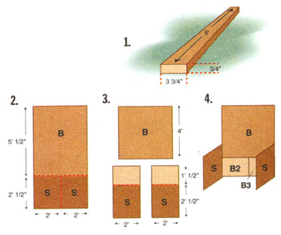 (3.) ""Actual"" dimensions of a ""nominal"" 1 x 4 x 6 board. (2.) A 4 x 8 pegboard (3) divided into five panels and (4.) arranged so. |
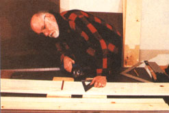 Left: Screwing in side shelf supports in side peg-board. Right: Fastening sides to back peg-board. |
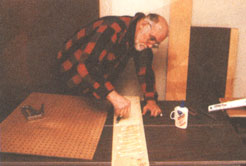 There are a variety of ways to take advantage of the peg-board shelf space. |
|
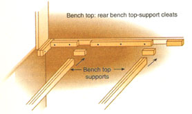 Affixing back peg-board to sides and top. |
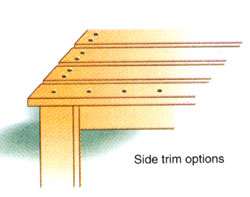 |
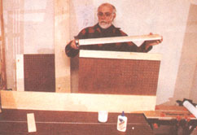 |
|
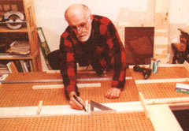 |
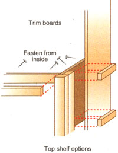 |
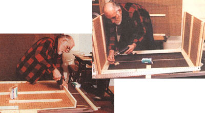 |
|
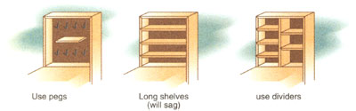 |
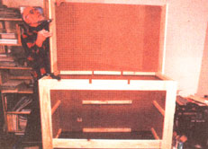 |
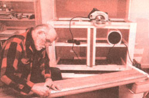 |
|
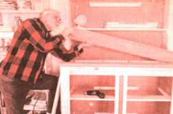 |
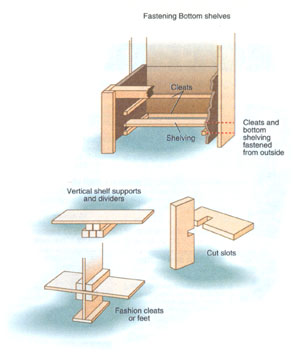 |
|